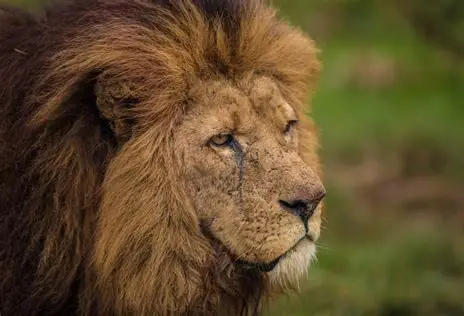

“King of the Jungle” (really the savannah). Lions are social big cats that live in groups called prides.
About the Lion
Lions (Panthera leo) are the only truly social big cats, living in prides typically made up of related females, their cubs, and a coalition of males.
Lionesses usually hunt cooperatively while males defend territory. They are carnivores found mostly in African savannahs and grasslands.
Fast facts
Average male weight: 150–250 kg; female: 120–182 kg